ホーム(準備中)
ホーム画面はグルスタ内で一番使う場所となります。そのためとてつもなくボタンがあります。
全て説明はしますが、大体の感覚で良いので覚えると楽になります。
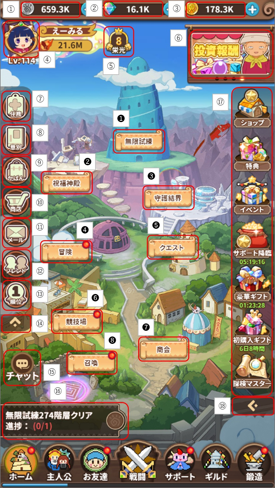
①は所持している『カン』の数です。
②は所持している『ダイヤ』の数です。
③は所持している『リン』の数です。
④はプレイヤー詳細やシステム設定等変更ができます。
⑤は現在の『栄光』か『VIP』が表示されます。表示優先度は『栄光』＞『VIP』です。
⑥はお得？な販売ページ等へ遷移することのできるバナーです。
⑦は『任務』です。デイリーミッションの立ち位置です。
⑧は『章別』です。全ての任務をクリアすると『VIP』値があがります。
⑨は『かばん』です。所持しているアイテムの確認や使用をすることができます。
⑩は『商店』です。様々なアイテムと引き換えに色々と手に入ります。
⑪は『メール』です。競技場報酬や補填等のアイテムを受け取ることができます。
⑫は『フレンド』です。フレンドを追加したりすることができます。
⑬は『順位』です。サーバー内や別サーバでの『お友達』『サポート』の評価の順位を見ることができます。
⑭は『⑧～⑬』のメニューを隠すことが出来ます。
⑮は『チャット』です。総合、世界、チーム、ギルド、超境(別サーバ)への発信ができます。
⑯は次やるべきことを教えてくれています。慣れてきたらここはあまり気にしなくても良いです。
⑰は各種販売ページ等へ遷移することができるアイコンです。
⑱は⑰の項目が多い場合に1列にしたり2列にしたりすることができます。
❶は『無限試練』です。永遠と塔を上り続けるので実力がどれくらいか知るのに良いですね。
❷は『祝福神殿』です。サポートキャラを『祝福の心』を使用することで解禁できます。
❸は『守護結界』です。LRのお友達を解禁すると解放されます。
❹は『冒険』です。主にアイテムを取得するようなクエストが集まっています。
❺は『クエスト』です。経験値が手に入るクエストが集まっています。
❻は『競技場』です。他ユーザーと戦い上位を目指すものです。
❼は『商会』です。クエスト➡宝地図で手に入れた本を出品することでダイヤを取得することができます。
❽は『召喚』です。いわゆるガチャです。
・カン
>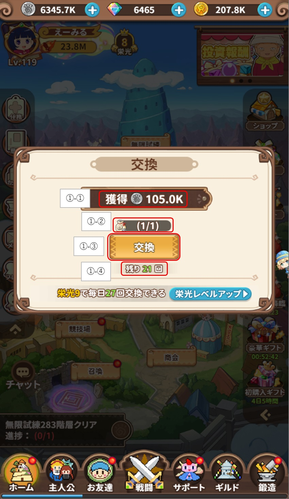①-①は交換で手に入る『カン』数です。
①-②は消費する『カン交換袋』かダイヤが表示されます。
①-③は条件を確認したうえで『交換』を選択すると『カン』が手に入ります。
①-④はランクに応じた『カン』の1日の交換数が表示されます。
※『カン』が足りなくなったら『鍛造➡一括売却』から装備を売ると良いです。
・ダイヤ
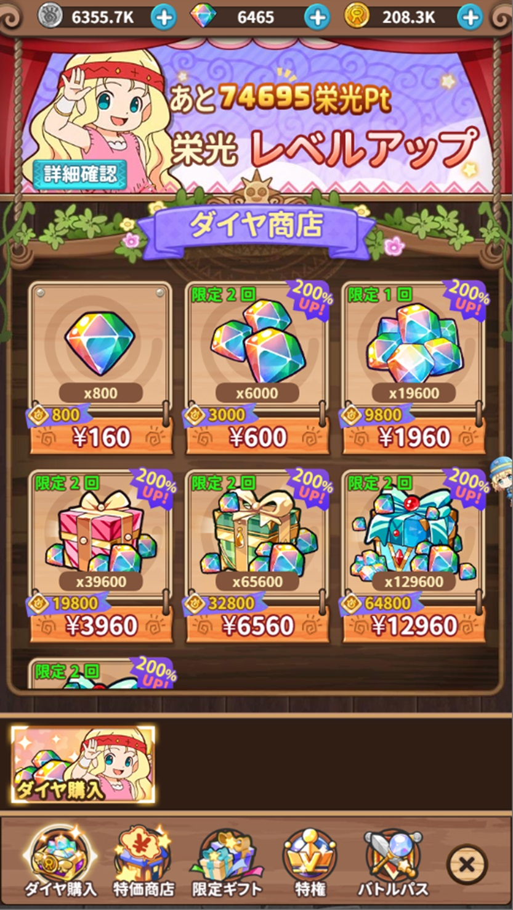ダイヤを購入するページへ遷移します。
正直言うとここでダイヤを購入するくらいなら『バトルパス』を等を購入しておまけで手に入れる方が得です。
・リン
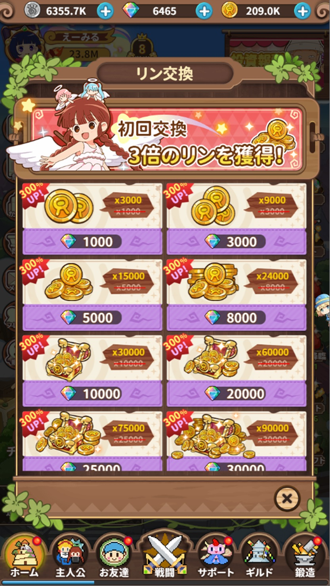リンを購入するページへ遷移します。
正直、無駄使いをしていなければよっぽど『リン』に困ることはないです。
・プレイヤー詳細
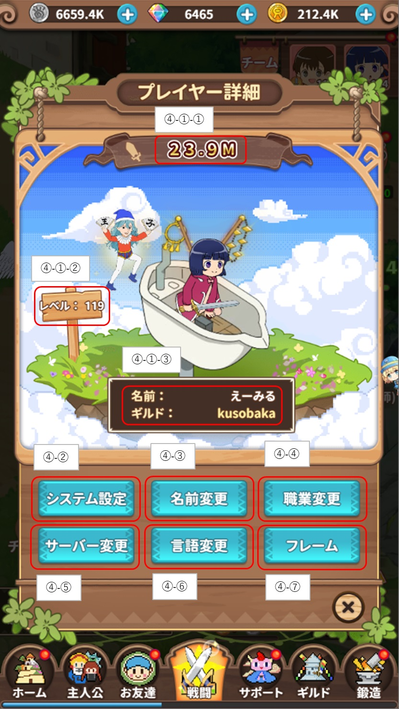④-①-①はプレイヤーの総戦力です。
④-①-②はプレイヤーの現在のレベルです。
④-①-③はプレイヤーの名前と所属しているギルド名です。
④-②は各種システムの設定変更ができます。
④-③はプレイヤーの名前を変更することができます。
④-④はプレイヤーの職業を変更することができます。
④-⑤はサーバーの変更を行うことができます。
※違うサーバで遊ぶ場合、データが無いと最初からとなります。
④-⑥はゲームの言語を変更することができます。
④-⑦は『フレーム』『プレート』『カード』を変更することができます。
・システム設定
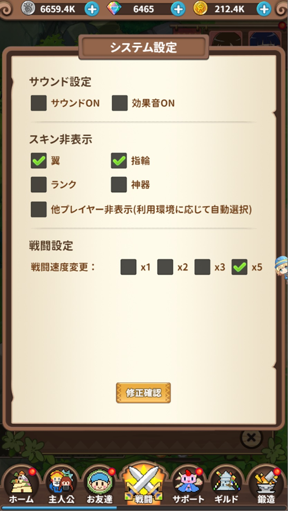④-②の箇所を選択すると各種設定のダイアログが表示されます。
☑マークが付いているとその設定が有効化されます。
・名前変更
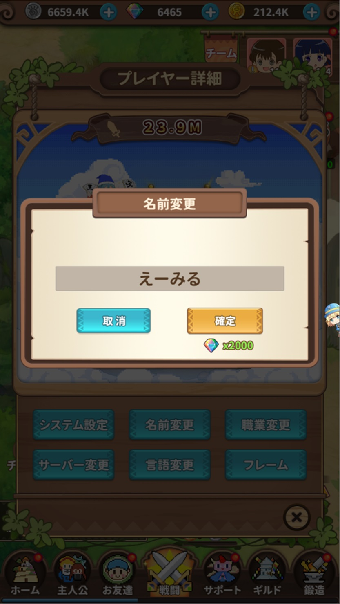④-③の箇所を選択すると名前変更のダイアログが表示されます。
初回の変更は無料ですが、2回目以降は2000ダイヤが必要です。
・職業変更
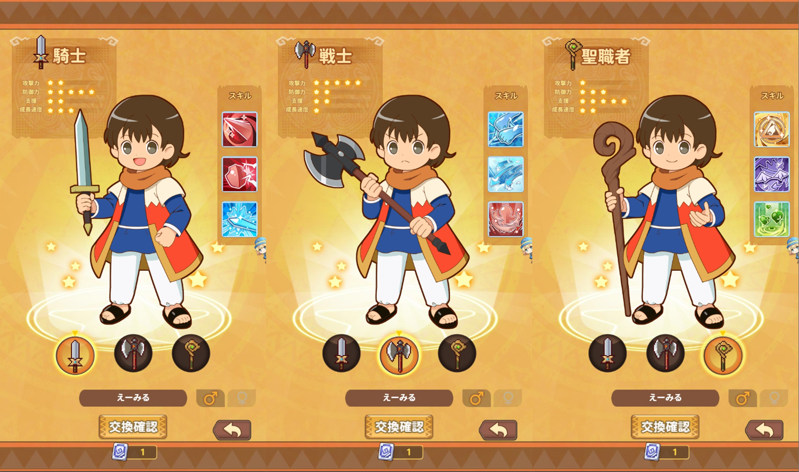 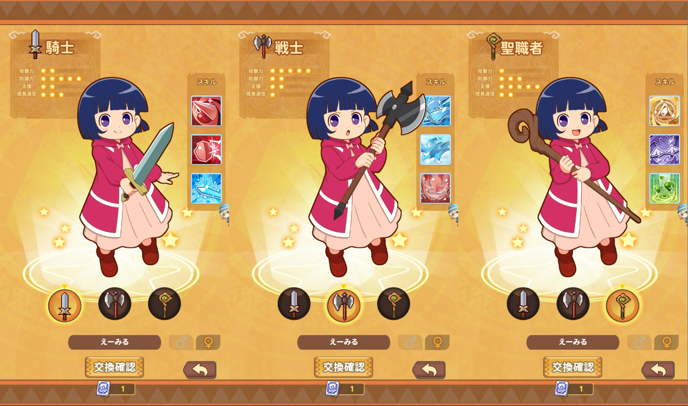④-④の箇所を選択すると職業の変更をすることができます。
『職業変更券』を所持していない場合は変更はできません。ダイヤ商店で3000ダイヤにて購入が可能です。
職業は3つあり、『騎士』『戦士』『聖職者』です。
プレイヤー名の箇所を押下すると、名前変更が可能です。
性別の変更が可能です。
変更に問題がなければ『交換確認』を押下して職業変更が完了します。
・サーバー変更
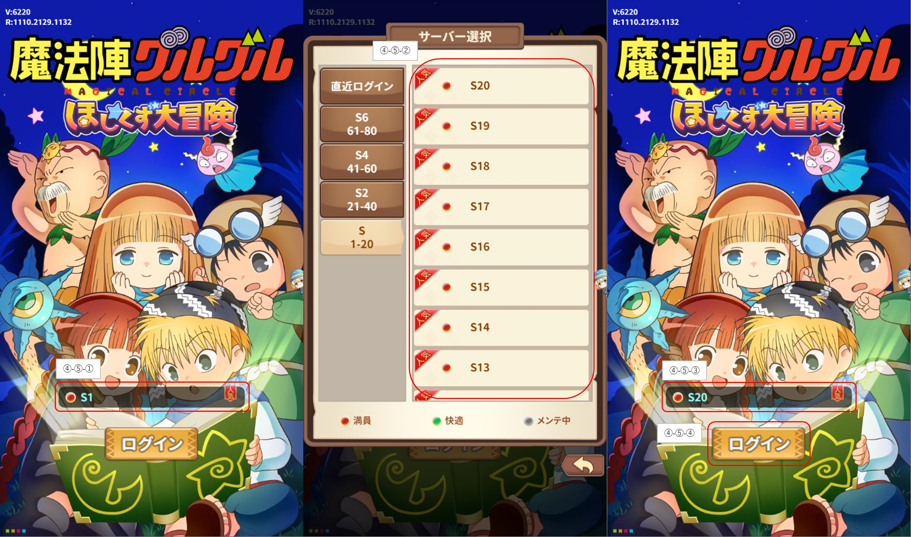④-⑤の箇所を選択するとサーバーの変更をすることができます。
ログイン画面に遷移するので、④-⑤-①の箇所を選択します。
現在稼働中のサーバーの一覧が表示されるので好きなサーバーを選択(④-⑤-②)します。
サーバーを選択すると再度ログイン画面に遷移します。
④-⑤-③の箇所が選択したサーバーになるので、④-⑤-④の『ログイン』を選択してサーバーの変更が完了します。
・言語変更
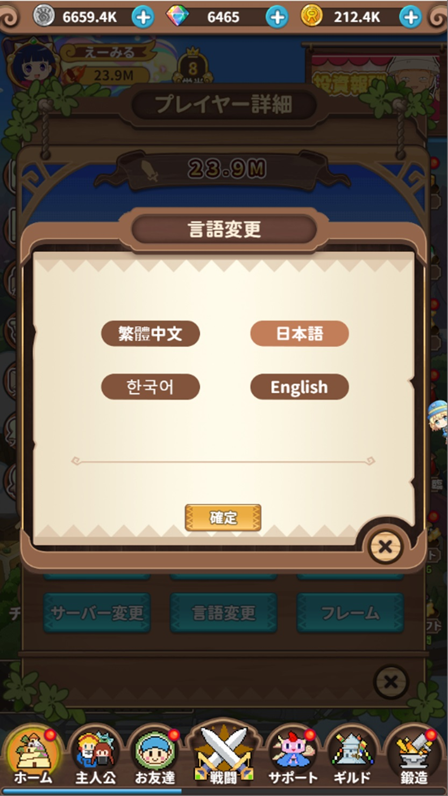④-⑥の箇所を選択すると言語変更をすることができます。
言語は4か国語あります。中国語、日本語、韓国語、英語。
4か所のうち好きな言語を選択すると背景色が変わります。
確定を選択すると言語変更が完了します。
・フレーム変更
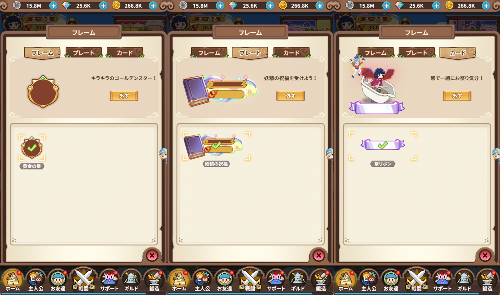④-⑦の箇所を選択すると『フレーム、プレート、カード』の変更をすることができます。
それぞれ好きなもの選択(装備)します。
チェックマークが付いていると有効化されています。
・VIP&栄光
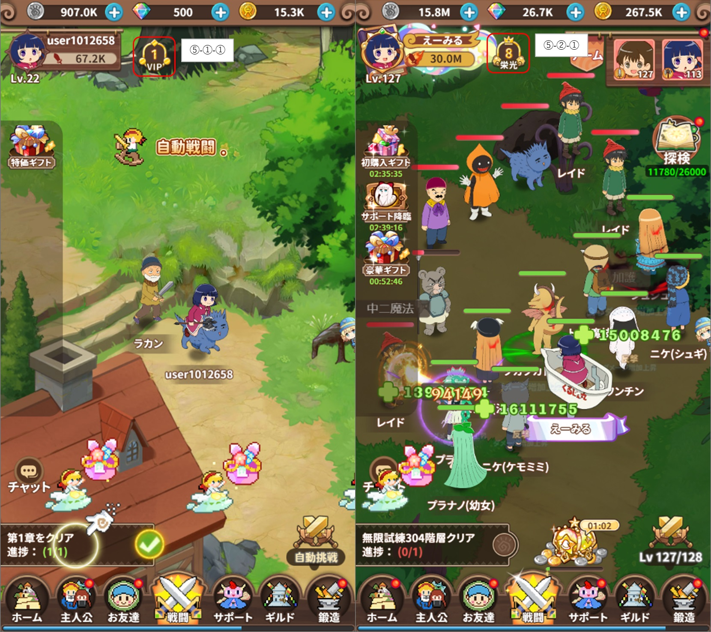⑤-①-①は現在の『VIP』値です。
⑤-①-②は現在の『栄光』値です。
『VIP』は無課金でもあげれますが、『栄光』は課金が必要です。
表示優先度は『栄光 > VIP』です。
・VIP特典
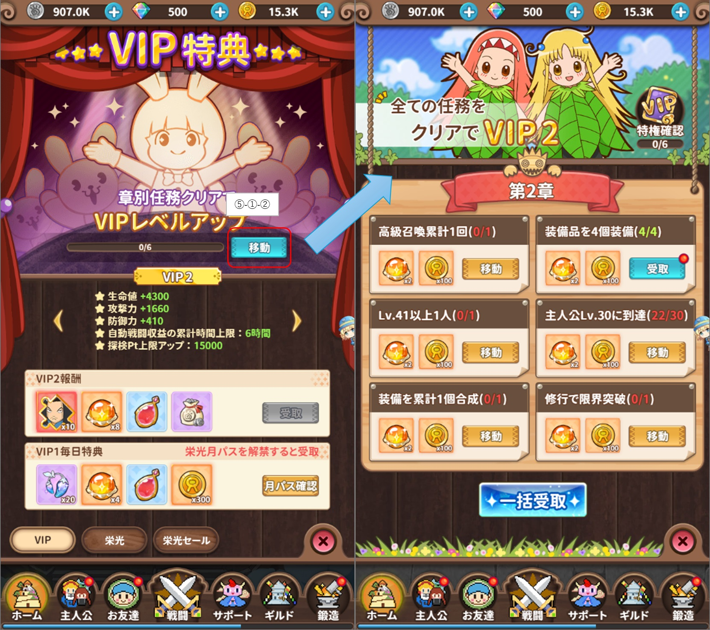⑤-①-①を選択すると『VIP特典』へ遷移します。
⑤-①-②を選択すると次のVIPへ上がる条件への任務ページに遷移します。
任務を全て達成するとVIP値をあげる事ができます。
VIP値を上げた後に『VIP特典』ページで報酬が受け取れます。
VIP特典が表示されている箇所の、『◀』『▶』箇所を押下すると別VIP値の特典が確認できます。
・栄光特典
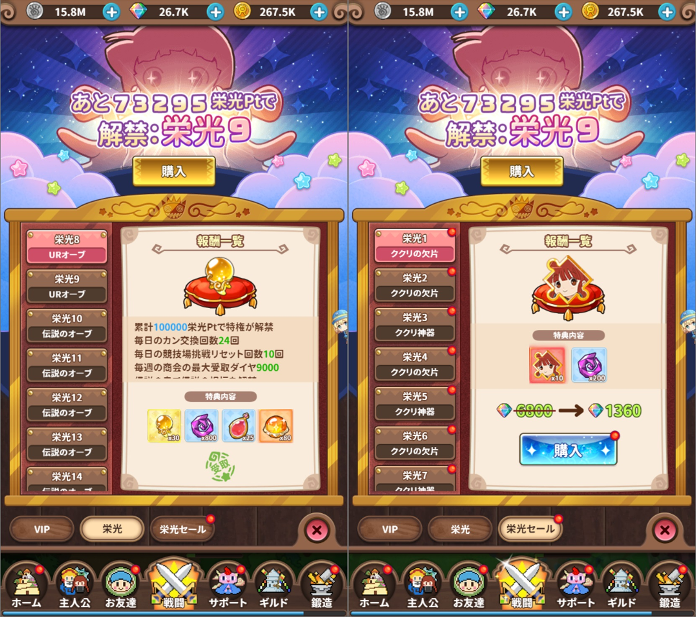⑤-①-②を選択すると栄光到達報酬ページへ遷移します。
『栄光Pt』は1円当たり5栄光ptです。
課金をする場合は、おまけが付くものを買うと良いです。
ダイヤ単体の購入は得では無いのでオススメしません。
『栄光セール』では、到達した栄光で解放されますがダイヤの消費が必要です。
個人的に『栄光1～栄光9』のセールは買わなくていいと思います。
ガチャチケットでもククリの欠片は一応手に入りますし、神器も『商店』▶『神器商店』で手に入ります。
また、最終的にはLR編成を目指していくことになるので.....
Use Tools
魔法陣グルグル ほしくず大冒険のプレイは『コチラ』からどうぞ